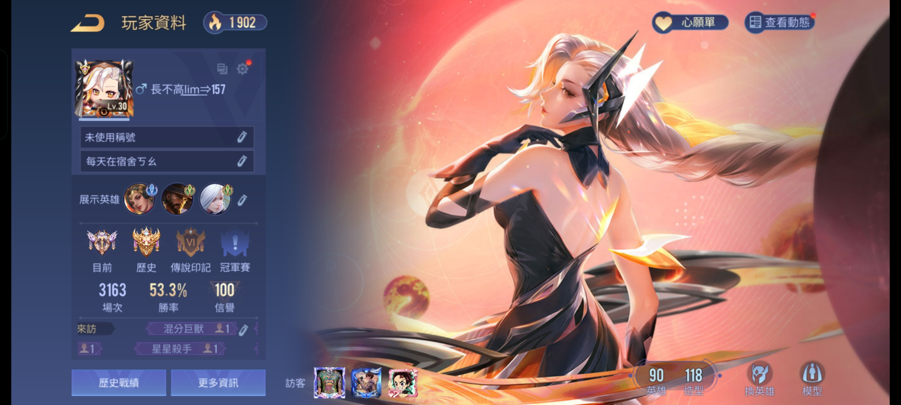
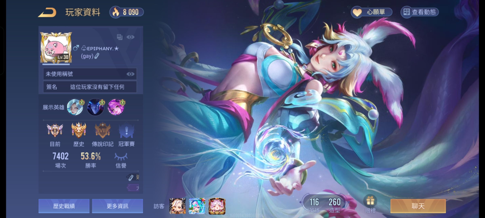
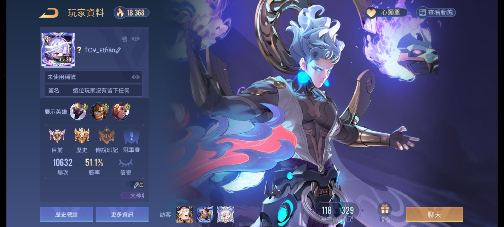
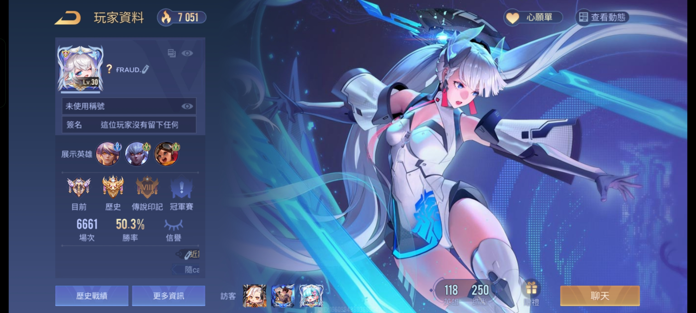
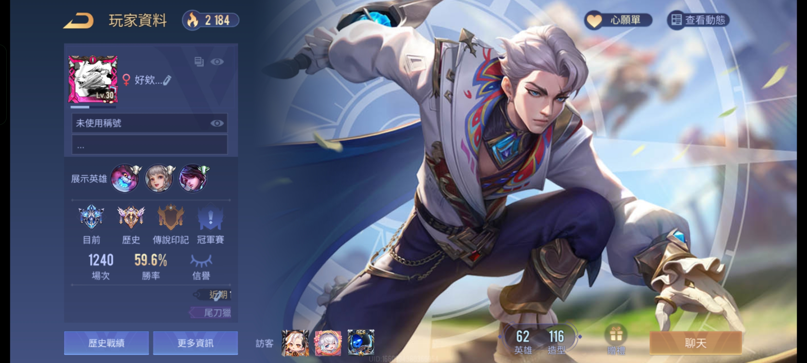

傳說對決五舍資工陪玩公司
陪玩玩家
李子源
擅長衝排還有對線的凱薩路玩家，最拿手的葉娜更是本公司公認的大魔王。只是這個人不太會玩其他路線就是了。
吳秉叡
擅長中路消耗角色，狀態好時可以凱瑞全隊，但是常常被搞心態而無法發揮實力。
洪銘韓
五路皆通，凱薩路表現較亮眼。弗洛倫的造詣頗高，是本公司遊玩最多次的玩家。
宋逸勛
五路皆通，最擅長打野位，與李子源的野凱配合是本公司最強大的上分組合。
謝宗翰

實力普普，但在射手位非常擅長扛壓。時常自己應對對面的進攻，讓其他路線的玩家得以發揮。
黃柏儒
實力堅強，五路皆通，但是常常選冷門角亂玩，請選他陪玩的玩家叫他不要亂選角。
林柏憲
擅長輔助位的玩家，雖然角色池很淺，但他還在努力擴充他的腳色池。